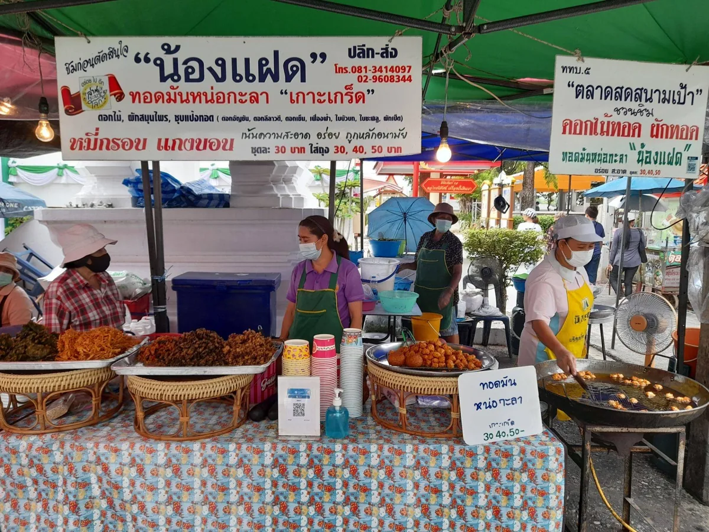
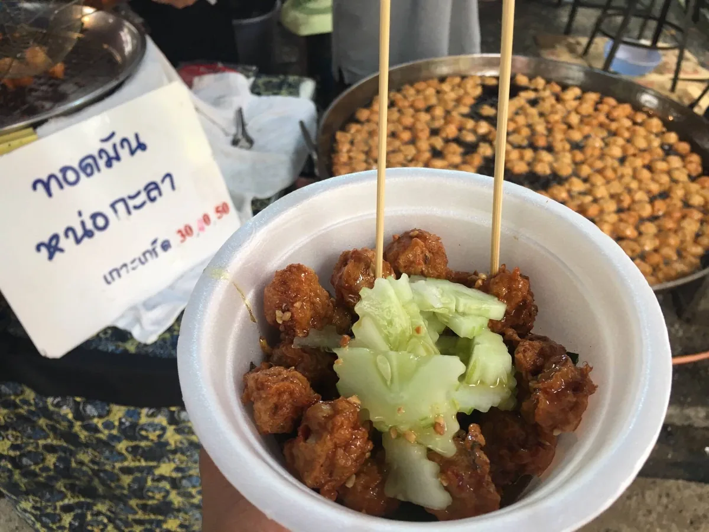
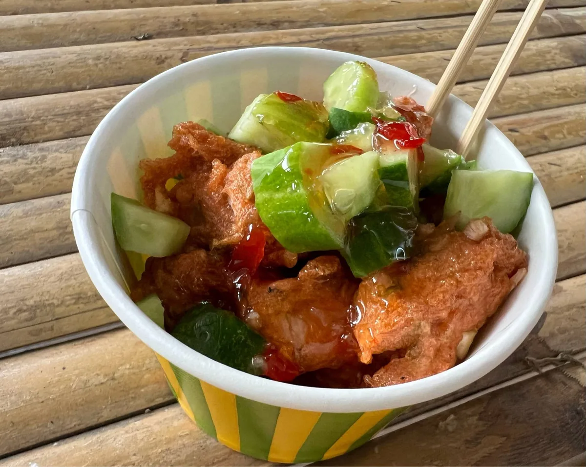
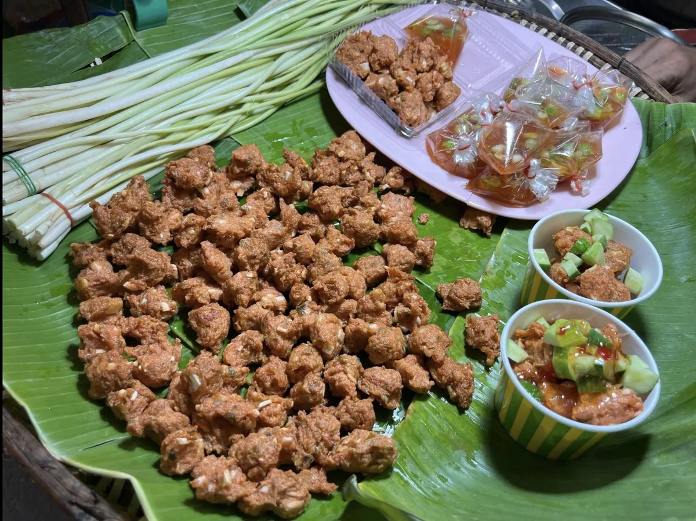
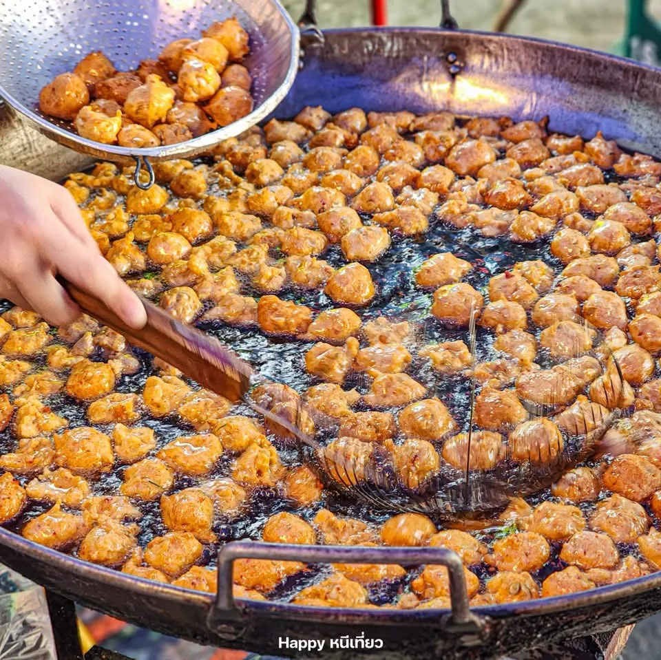
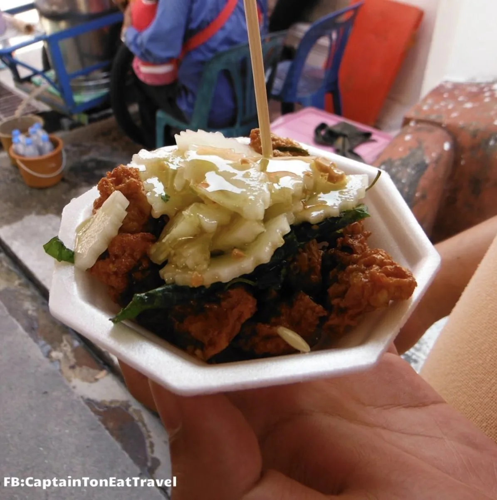
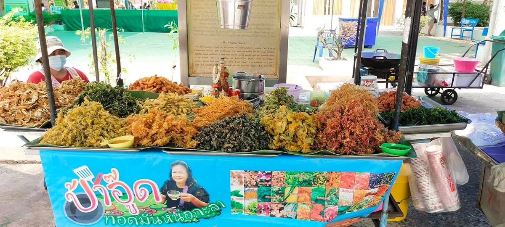
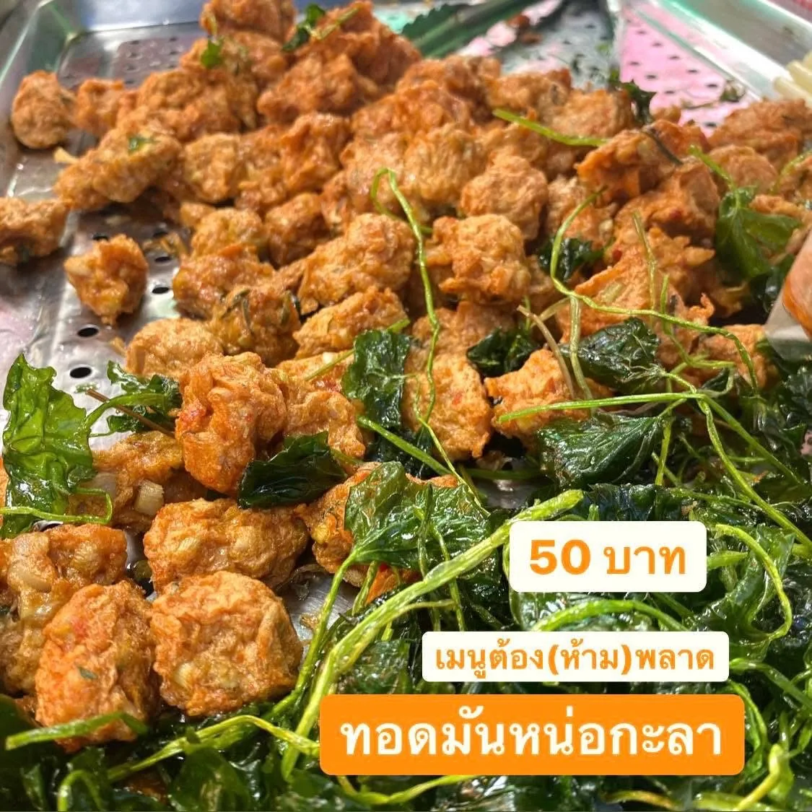
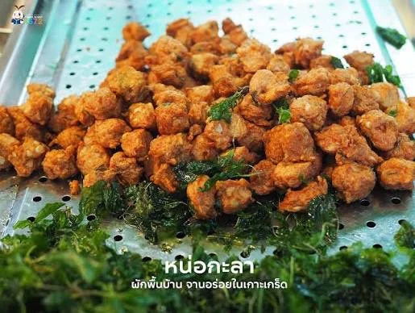

ของคาว
ทอดมันหน่อกะลา
ถ้าจะกินอะไรสักอย่างที่กินที่อื่นไม่ได้จริง ๆ อันนี้คืออันนั้น เพราะวัตถุดิบหลักของมันขึ้นอยู่บนเกาะนี้เป็นหลัก หน้านี้รวมไว้ห้าร้าน พร้อมราคา เวลาเปิด และช่วงที่ควรไป
สรุปให้ก่อน
- ราคา
- 30–50 บาทต่อชุดชุดเล็กเริ่ม 30 ชุดใหญ่ราว 50 มีร้านหนึ่งยังไม่มีข้อมูลราคา
- เวลาเปิด
- ส่วนใหญ่เสาร์–อาทิตย์มีร้านหนึ่งระบุว่าเปิดทุกวัน อีกสองร้านยังไม่มีข้อมูลเวลา
- พิกัด
- ต.เกาะเกร็ด อ.ปากเกร็ด นนทบุรีกระจายตั้งแต่ข้างวัดปรมัยยิกาวาสไปจนถึงตลาดริมน้ำ
- รวมในหน้านี้
- 5 ร้านมีทั้งร้านประจำ ร้านรถเข็น และร้านในโซนตลาดคนเดิน
หน่อกะลาคือหน่ออ่อนของต้นกะลา พืชตระกูลปาล์มที่ขึ้นได้ดีในดินชื้นริมน้ำแบบที่เกาะเกร็ดมี พอเป็นพืชที่ผูกกับพื้นที่ขนาดนี้ มันเลยกลายเป็นของกินประจำถิ่นไปโดยปริยาย หน้านี้รวมไว้ห้าร้าน พร้อมราคา เวลาเปิด และช่วงที่ควรไปของแต่ละร้าน
รสชาติเป็นยังไง
เนื้อหน่อกะลาสับละเอียดผสมกับเครื่องแกงและเนื้อปลา แล้วทอดจนผิวกรอบ กัดเข้าไปจะได้ความกรอบจากผิวก่อน ตามด้วยเนื้อในที่นุ่มและมีความหนึบเล็กน้อยจากตัวหน่อ รสออกไปทางเครื่องแกงมากกว่าเผ็ดจัด
ปกติเสิร์ฟมาพร้อมน้ำจิ้มอาจาดที่มีแตงกวากับหอมแดง ช่วยตัดความมันของของทอดได้พอดี
ห้าร้านในหน้านี้
- น้องแฝดทอดมันหน่อกะลา
- ทอดมันหน่อกะลาแม่ตา
- ทอดมันหน่อกะลาครูเจี๊ยบ
- ทอดมันหน่อกะลาป้าอู๊ด
- ทอดมันหน่อกะลาป้าติ๋ม
เลือกร้านยังไง
- ข้อมูลครบที่สุดคือน้องแฝดกับป้าติ๋ม ทั้งราคาและเวลาเปิดยืนยันได้ทั้งคู่ ถ้าอยากไปแบบไม่ต้องลุ้นให้เริ่มจากสองร้านนี้
- มาวันธรรมดาให้ไปแม่ตา เป็นร้านเดียวที่ระบุว่าเปิดทุกวัน ที่เหลือเปิดเฉพาะเสาร์–อาทิตย์หรือขึ้นกับว่าตลาดเปิดไหม
- มีเวลาน้อยให้แวะน้องแฝดที่อยู่ข้างวัดปรมัยยิกาวาส เจอได้เร็วที่สุดหลังลงเรือ ส่วนครูเจี๊ยบกับป้าติ๋มอยู่ลึกเข้าไปในโซนตลาด
- ป้าอู๊ดมีราคาแล้วแต่ยังไม่มีเวลาเปิดที่ยืนยันได้ ถ้าจะไปควรโทรถามร้านก่อน
1. น้องแฝดทอดมันหน่อกะลา
ร้านเจ้าเก่าใกล้วัดปรมัยยิกาวาส เป็นหนึ่งในร้านแรก ๆ ที่เจอหลังขึ้นเกาะ ทอดใหม่จากกระทะ เสิร์ฟพร้อมน้ำจิ้มรสเปรี้ยวหวานกับแตงกวา นอกจากทอดมันยังมีผักทอดและดอกไม้ทอดให้เลือกด้วย
- ราคา
- 30–50 บาทต่อชุดชุดเล็ก 30 ชุดใหญ่ 50 บางขนาดอยู่ราว 40
- เวลาเปิด
- เสาร์–อาทิตย์ 10:00–18:00
- พิกัด
- ข้างวัดปรมัยยิกาวาส ต.เกาะเกร็ด อ.ปากเกร็ด นนทบุรี 11120อยู่ใกล้ท่าเรือ เจอได้เร็วที่สุดในห้าร้านนี้
- ควรไปตอนไหน
- สายถึงบ่าย 10:00–15:00ซื้อทอดมันสด ๆ แล้วเดินเที่ยวต่อได้เลย


2. ทอดมันหน่อกะลาแม่ตา
อีกร้านบนเกาะเกร็ดที่มีคนแนะนำให้ลอง จุดที่ต่างจากร้านอื่นในหน้านี้คือข้อมูลร้านระบุว่าเปิดทุกวัน ไม่ได้เปิดเฉพาะเสาร์–อาทิตย์
- ราคา
- ยังไม่พบราคาที่ยืนยันได้
- เวลาเปิด
- ทุกวัน 09:00–17:00ร้านเดียวในหน้านี้ที่ระบุว่าเปิดวันธรรมดาด้วย
- พิกัด
- 72/24 หมู่ 5 ต.เกาะเกร็ด อ.ปากเกร็ด นนทบุรี 11120
- ควรไปตอนไหน
- สายถึงบ่าย 09:00–15:00แวะซื้อเป็นของกินเล่นระหว่างเดินรอบเกาะ


3. ทอดมันหน่อกะลาครูเจี๊ยบ
ร้านรถเข็นในโซนตลาดคนเดิน ทำเป็นชิ้นพอดีคำ เนื้อทอดมันเหนียวนุ่ม ใช้หน่อกะลาสดเป็นวัตถุดิบหลัก
- ราคา
- 30–50 บาทต่อชุดชุดเล็ก 30 ชุดใหญ่ 50
- เวลาเปิด
- ยังไม่พบเวลาที่ยืนยันได้อยู่ในโซนตลาด จึงขึ้นกับว่าวันนั้นตลาดคนเดินเปิดหรือไม่
- พิกัด
- ตลาดคนเดินด้านในเกาะเกร็ด ใกล้ทางวัดปรมัยยิกาวาส
- ควรไปตอนไหน
- สายถึงบ่ายของวันที่ตลาดเปิดวันธรรมดาร้านค้าในโซนนี้เปิดไม่มาก


4. ทอดมันหน่อกะลาป้าอู๊ด
แผงของทอดในลานวัด ขายทั้งทอดมันหน่อกะลา ผักทอด และดอกไม้ทอดหลายอย่างเรียงเต็มแผง มีเบอร์ติดต่อร้าน แต่เวลาเปิด-ปิดยังไม่มีข้อมูลที่ยืนยันได้
- ราคา
- 50 บาทต่อชุด
- เวลาเปิด
- ยังไม่พบเวลาที่ยืนยันได้
- พิกัด
- ต.เกาะเกร็ด อ.ปากเกร็ด นนทบุรี 11120ตั้งแผงอยู่ในลานวัด
- ควรไปตอนไหน
- ช่วงกลางวันควรโทรสอบถามก่อนเดินทาง เพราะยังไม่มีเวลาเปิด-ปิดที่ยืนยันได้


5. ทอดมันหน่อกะลาป้าติ๋ม
ร้านสูตรโบราณที่นักท่องเที่ยวนิยม จุดเด่นอยู่ที่เนื้อปลากรายนวดฟาดจนเหนียวนุ่ม ผสมเครื่องแกงรสเข้ม แล้วใส่หน่อกะลาสดหั่นท่อนให้ได้สัมผัสกรุบ เสิร์ฟคู่น้ำจิ้มหวานอมเปรี้ยวกับแตงกวาซอย และมักมีดอกไม้ทอดหรือผักพื้นบ้านทอดขายเคียงด้วย
- ราคา
- 40–50 บาทต่อชุดมีทั้งชุดกระทงพร้อมทานและชุดใหญ่สำหรับซื้อกลับ
- เวลาเปิด
- เสาร์–อาทิตย์ และวันหยุดนักขัตฤกษ์ 09:00–17:00หรือจนกว่าของจะหมด
- พิกัด
- ตลาดทางเดินริมแม่น้ำรอบเกาะ ใกล้วัดเสาธงทองหรือละแวกชุมชนโอ่งอ่าง ต.เกาะเกร็ด อ.ปากเกร็ด นนทบุรี 11120
- ควรไปตอนไหน
- สายถึงบ่ายต้น 10:00–14:00ช่วงที่ทอดต่อเนื่อง ได้ของสดใหม่ บางวันหมดก่อนเวลาปิด

กินยังไงให้อร่อยที่สุด
- กินตอนเพิ่งทอดเสร็จ ทิ้งไว้นานผิวจะนิ่มและเสียความกรอบ
- สั่งชุดเล็กก่อนถ้ายังไม่เคยกิน จะได้เหลือท้องไว้กินอย่างอื่น
- ถ้าจะซื้อกลับ บอกร้านว่าเอากลับ เขาจะแยกน้ำจิ้มให้
อย่าซื้อเยอะในร้านแรก
หลายร้านในตลาดทำขายเหมือนกันแต่รสไม่เหมือนกัน ซื้อร้านละนิดแล้วเทียบสนุกกว่าซื้อร้านเดียวจนอิ่ม